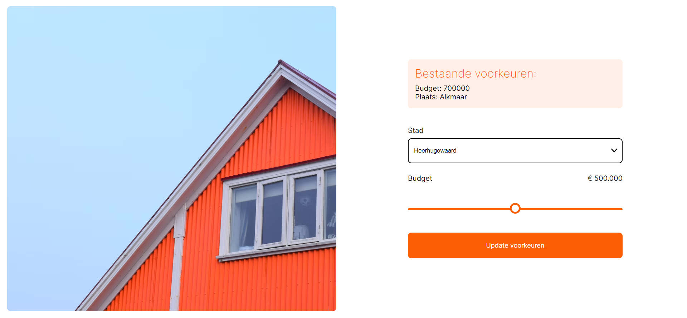

Aan het einde van jaar 2 mocht er gekozen worden voor een keuzeblok, hier heb ik voor blok Tech gekozen. Hier was het de
bedoeling dat je een matching applicatie ging maken met Nodejs. Met mijn team heb ik een applicatie gemaakt die je aan je perfecte
huis matched. Deze werkt op de steden bij jou in de buurt, door middel van een API.
We hebben de applicatie gemaakt via Github, met de Github Flow manier waardoor je veel controle hebt over de version control.
1. Je begint bij een welkom pagina, waar je de keuze hebt tussen inloggen of
een account registreren, als je nog niet eerder op de applicatie bent geweest.
2. Als je een account registreert, wordt deze opgeslagen in de database die gekoppeld zit.
Dit is een mongoDB database die zowel de accounts als huizenopties opgeslagen heeft staan.
3. Wanneer je vervolgens inlogt, wordt je gebruikersnaam teruggekoppelt vanuit de database,
om zo een warm welkom te krijgen.
4. Om uit steden bij jou in de buurt te kiezen, gebruikt Rooms een steden API. Deze toont
steden met bepaalde gegeven parameters. In dit geval zijn dat steden met meer dan 30.000 inwoners, die
binnen 100km van jouw locatie liggen. Jouw locatie wordt opgehaald met een andere API die deze omzet
in coördinaten, die de steden API gebruikt.
5. Wanneer je beide voorkeuren hebt ingevuld, worden deze vergeleken met alle huizen die in de database
staan. Als er meerdere opties zijn voor het budget, zal de app degene kiezen die het dichtst bij
het budget ligt.
6. Vervolgens krijg je het resultaat te zien. Ben je niet tevreden? Dan kan je het nog een keer proberen.
Als je wel heel tevreden bent, kun je het huis toevoegen aan je favorieten lijst.

7. Als je opnieuw gaat proberen, zie je wat je de vorige keer hebt ingevuld. Zo vul je niet
2x hetzelfde in.